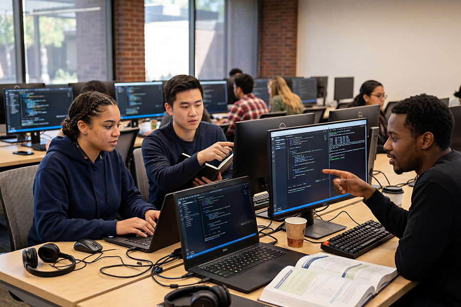

Trabaja en todo el ciclo
Desde la definición de requisitos y el análisis, hasta el diseño, construcción, pruebas y la administración de proyectos.
Plan de Estudios 2023 · Departamento de Computación y Diseño
¡Diseña el futuro! Crea soluciones tecnológicas de impacto global. Únete a la comunidad ITSON.
Formamos profesionistas íntegros, innovadores y emprendedores para el mercado internacional.
Desde la definición de requisitos y el análisis, hasta el diseño, construcción, pruebas y la administración de proyectos.
En empresas de desarrollo de software, en organizaciones públicas y privadas, o en proyectos independientes.
Domina tecnologías emergentes, inteligencia artificial y acredita el nivel de inglés B1+.
¿Dudas? Chatea con nosotros: teléfono +52 (644) 410-90-01, ext. 1531 · WhatsApp (únicamente mensajes de texto): +52 (644) 230 8643
Departamento de Computación y Diseño, Plan de Estudios 2023: innovador, para innovadores y emprendedores, para el mercado internacional.
“Formar profesionistas íntegros, comprometidos con su labor, innovadores, emprendedores y capaces de idear, diseñar, construir y gestionar eficientemente software competitivo para el mercado internacional, que contribuyan al crecimiento y progreso de la sociedad.”
Mtra. Martha Eloisa Larrínaga Hernández
isw-obregon@itson.edu.mx · martha.larrinaga@itson.edu.mx
Teléfono: +52 (644) 410-90-01, ext. 1531
También se imparte en Guaymas y Navojoa. Los contactos por unidad están en la sección de Perfiles y en el formulario de contacto.
Consulta tu resultado en el portal de admisiones.
Cubre la cuota de solicitud en las fechas indicadas.
Entrega tu constancia de preparatoria con promedio.
Revisa el resultado de tu solicitud.
Revisa horarios, grupos y materias disponibles.
Completa tu inscripción en línea.
Bienvenido a la comunidad ITSON.
Registra tus datos generales para el trámite.
Llena la solicitud de titulación.
Cubre la cuota correspondiente.
Consulta el resultado de la auditoría de tu expediente.
Revisa el resultado de tu solicitud de titulación.
Consulta el estado de tu título y retíralo cuando esté listo.
Los pasos y requisitos exactos se confirman en los canales oficiales del ITSON, porque pueden cambiar por ciclo.

Gran parte del trabajo es colaborativo: analizar un problema, repartir tareas, revisar el código de otros y defender tus decisiones de diseño.
El plan 2023 incorpora tecnologías emergentes e inteligencia artificial en tu formación, con un modelo basado en competencias.
No necesitas saber programar desde la prepa: la carrera arranca con fundamentos como algoritmos computacionales.
Al graduarte, serás un profesionista socialmente comprometido, íntegro, innovador y emprendedor, capaz de desarrollar software aplicando procesos, modelos y estándares de calidad internacional.
Certificación de idiomas: inglés B1+ (492–519 TOEFL ITP).
Diseñar software aplicando metodologías y estándares.
Construir software de calidad y seguro.
Administrar proyectos de desarrollo.
Trabajo en equipo y comunicación efectiva.
Integridad y ciudadanía responsable.
Sustentabilidad, compromiso social y cultura de la legalidad.
Emprendimiento y resolución de problemas.
Gestión socioemocional.
Aprendizaje autónomo.
Compromiso social y ciudadanía responsable.
Campus: Obregón — Mtra. Martha Eloisa Larrínaga Hernández, isw-obregon@itson.edu.mx · Guaymas — Mtro. Ricardo Daniel Carrasco Correa, isw-guaymas@itson.edu.mx, +52 (622) 221-00-32/33 ext. 6074 · Navojoa — Mtro. José de Jesús Soto Padilla, isw-navojoa@itson.edu.mx, +52 (642) 422-59-29 ext. 5119
Define y analiza las necesidades del usuario y del sistema, crea la arquitectura y diseña aplicaciones, desarrolla y programa soluciones, y verifica la calidad, funcionalidad y seguridad del producto.
Define y analiza las necesidades del usuario y del sistema.
Analiza sistemas y procesos para optimizar el rendimiento.
Crea y diseña la arquitectura de aplicaciones.
Verifica la calidad, funcionalidad y seguridad del producto.
Desarrolla y programa soluciones utilizando diversos lenguajes.
Administra proyectos de desarrollo de software, equipo, tiempos y entrega.
Empresas especializadas en crear productos a medida.
Departamentos de tecnología en cualquier industria, en organizaciones públicas y privadas.
Trabajo independiente y proyectos propios, incluso para clientes internacionales.
Cada vez más procesos — ventas, salud, educación, logística, gobierno — dependen de software. El enfoque del ITSON en estándares internacionales y en inglés B1+ apunta a que puedas competir por proyectos y empleos fuera de Sonora y de México, incluso trabajando de forma remota.

Llena esta solicitud y se abrirá tu app de correo con el mensaje listo para enviarlo al programa de Ingeniería en Software del ITSON. Es una solicitud real: llega como correo a isw-obregon@itson.edu.mx, con copia a la responsable de programa.
Consulta siempre la información oficial y actualizada en los canales del ITSON.